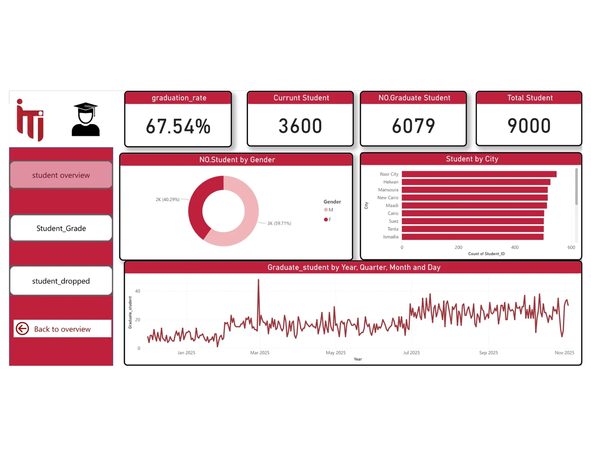
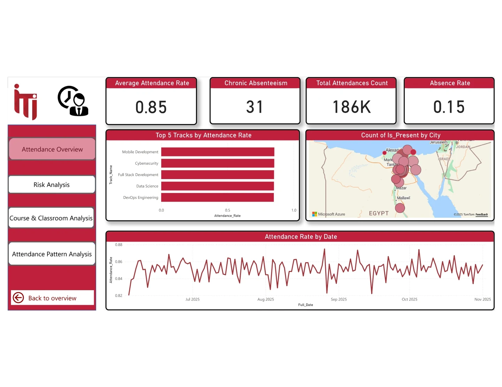
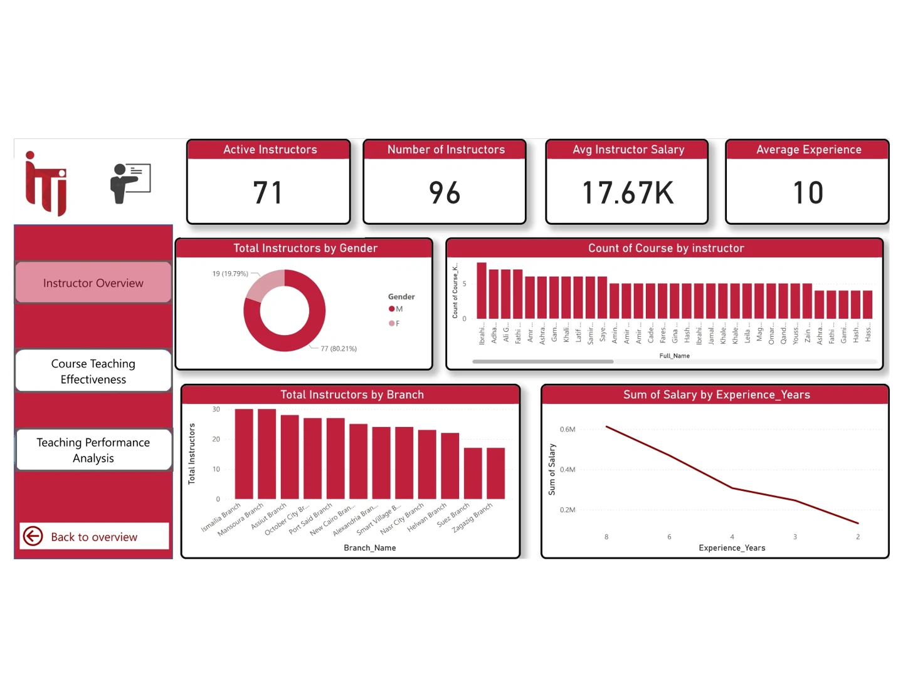
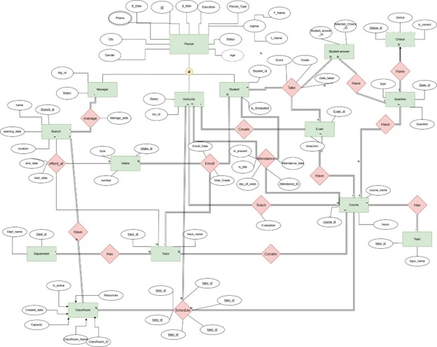
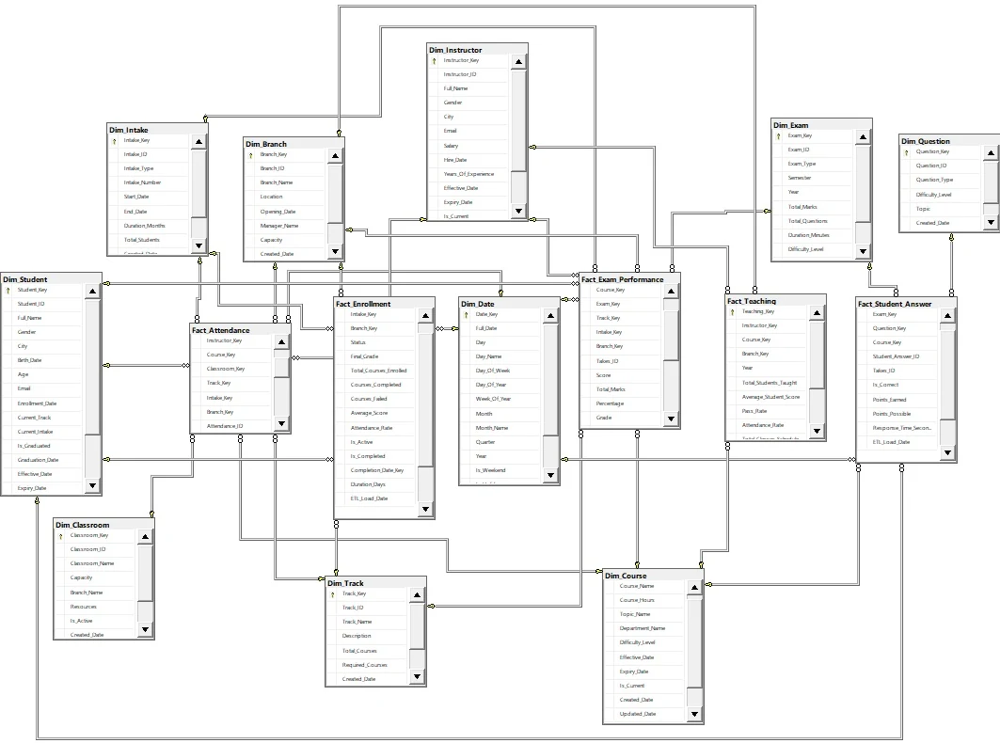
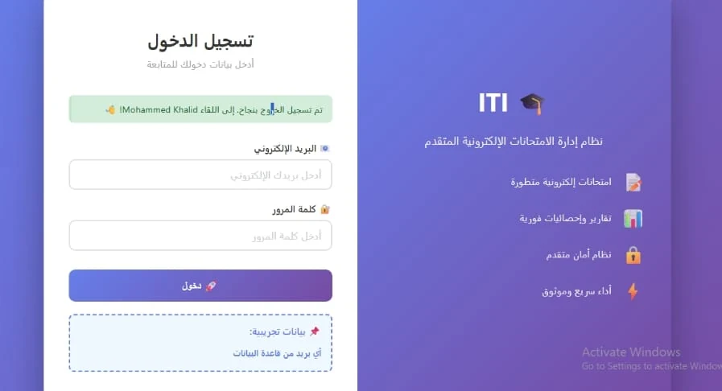
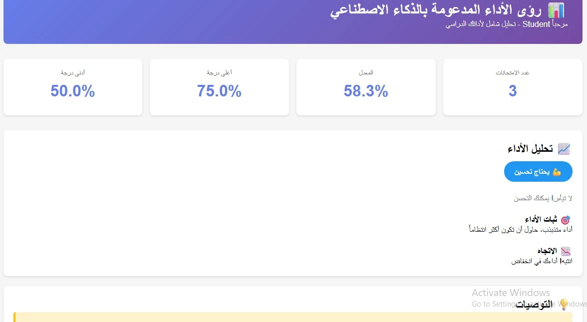
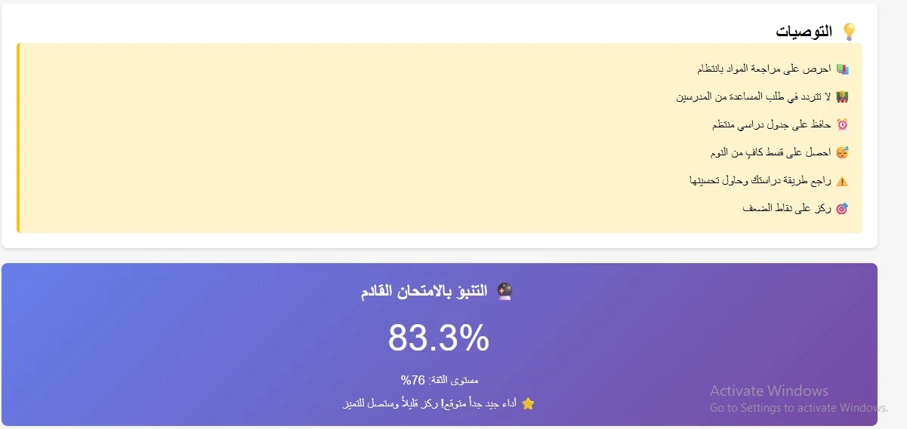
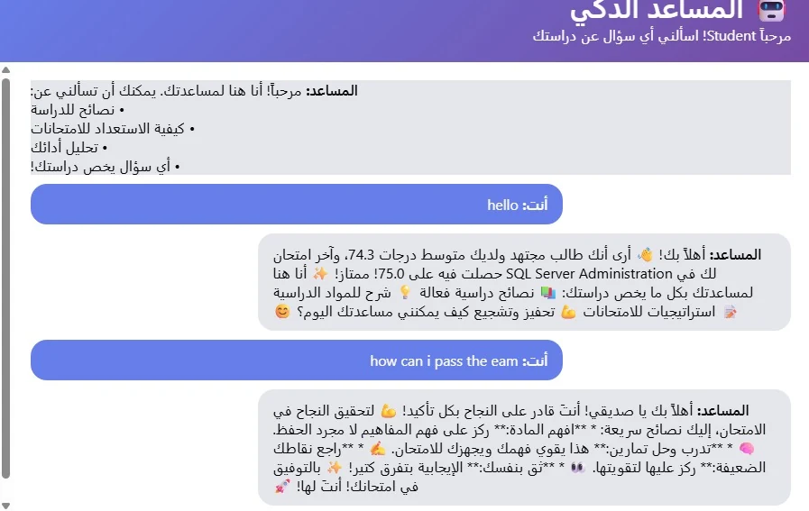
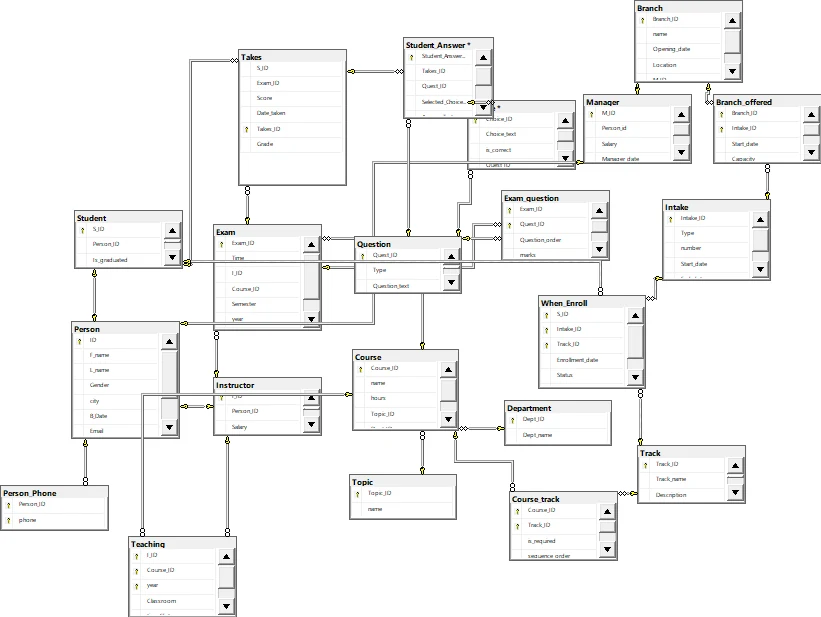

Education / End-to-end data platform
ITI Examination Management System
From examination records to reporting: a training project connecting a Flask application, SQL Server and analytical views.

Portfolio / training project · Original project artifacts · Data platform
01 / BUSINESS CHALLENGE
The question behind the work.
Exams, questions, students, instructors and attendance form a connected data problem. An application needs transactional records, while analytical reporting needs a structure suited to comparing performance.
02 / DATASET & OBJECTIVES
Start with the context.
A training/portfolio project associated with the ITI Power BI Developer track. Dashboard counts belong to the project dataset; they are not evidence of deployment across real institutions or paying customers. Individual contribution and any collaborators should be confirmed by the author.
Project objectives
- Model examination records and the relationships between users, courses and assessments.
- Support student, instructor and manager workflows in Flask.
- Connect the operational design to documented analytical and warehouse views.
03 / TECHNICAL APPROACH
How the pieces connect.
The published repository separates Flask routes and models, SQL database and warehouse scripts, and ERD/ETL documentation. It also includes a Gemini-assisted chatbot and linear-regression helper code for exploring student performance.
ARCHITECTURE / DATA MODEL
Flask role-based interface → SQL Server operational database → documented attendance ETL → analytical warehouse/reporting views. The repository includes database and warehouse SQL; SSIS behavior is documented, but an executable .dtsx package is not published.
Implementation
Student, instructor and manager routes implement exam-related workflows. Database scripts describe the operational and reporting structures. The visual artifacts show executive, student, attendance and instructor views alongside application screens.
04 / VERIFIED OUTCOMES
What the work demonstrates.
Published code and diagrams demonstrate the design of an application-to-reporting project. No controlled before/after measurement supports the former 80% processing-time claim. This is a portfolio prototype, not a production-security endorsement.
05 / SOURCE MATERIAL
Look closer.
Technologies
06 / VISUAL RESULTS
The original artifacts.
Genuine project visuals, retained from the original portfolio. Open any image to inspect it in full.




















LET’S MAKE IT CLEARER
Let’s make your data useful.
Tell me what you’re working with, and what you need to understand.